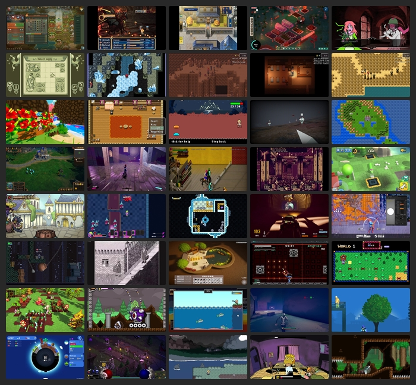

BlueSky Quick Recap #indiedev 2025-08-07
Saved Post Num:
---
<< Previous
Home
Next >>

Time Range:
07 Aug 2025
Total Number of Post: 660+
Number of Post Displayed: 63
Post Selection Guidelines
<< Previous
Home
Next >>